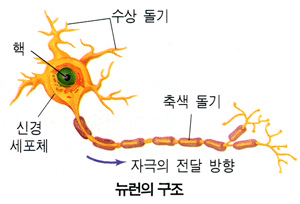

신경계 : 감각 기관에서 받아들인 자극을 전달하고, 이 자극을 판단하여 적절한 반응이 나타나도록 신호를 전할하는 체계
뉴런의 구조와 기능

뉴런 : 신경계를 구성하는 신경 세포
- 가늘고 길며 돌기가 발달
- 신경 세포체, 가지 돌기, 축삭 돌기 등으로 이루어져있음
# 신경 세포체
- 핵과 대부분의 세포질이 모여 있는 부분이다.
# 가지돌기
- 신경 세포체에 나뭇가지처럼 갈라져 있는 여러 개의 짧은 돌기
- 다른 뉴런이나 감각 기관으로 부터 자극을 받아들임
# 축삭돌기
- 신경 세포체에서 길게 뻗어나와 있는 돌기
- 가지 돌기에서 받아들인 자극을 다른 뉴런이나 기관으로 전달
- 뉴런에서의 이동 : 가지돌기 -> 신경세포체 -> 축삭돌기
뉴런의 종류
- 감각 뉴런 : 신경 세포체가 물방울 모양
# 감각기에서 받아들인 자극을 연합 뉴런으로 전달
- 연합 뉴런 : 크기 작고 돌기 발달
# 감각 뉴런에서 전달된 자극을 느낌
# 자극 판단, 명령 내림
- 운동 뉴런
# 연합 뉴런의 명령을 받아들임
# 명령을 반응기(근육 등)로 전달
자극의 전달 과정 : 자극 -> 감각기관(눈, 코, 입, 귀, 코, 피부 등) -> 감각 뉴런 -> 연합뉴런(뇌, 척수) -> 운동뉴런 -> 반응기관(근육 등) -> 반응